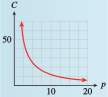

Subsection 2.7 Finding a Formula for Inverse Variation
If we know that two variables vary inversely and we can find one pair of corresponding values for the variables, we can determine \(k\text{,}\) the constant of variation.
Example 2.7.18.
The intensity of electromagnetic radiation, such as light or radio waves, varies inversely with the square of the distance from its source. Radio station KPCC broadcasts a signal that is measured at \(0.016\) watt per square meter by a receiver \(1\) kilometer away.
- Write a formula that gives signal strength as a function of distance.
- If you live \(5\) kilometers from the station, what is the strength of the signal you will receive?
Solution
- Let \(I\) stand for the intensity of the signal in watts per square meter, and \(d\) for the distance from the station in kilometers. Then \(I = \dfrac{k}{d^2}\text{.}\) To find the constant \(k\text{,}\) we substitute \(0.016\) for \(I\) and \(1\) for \(d\text{.}\) Solving for \(k\) gives us\begin{equation*} \begin{aligned}[t] 0.016 \amp = \dfrac{k}{1^2} \\ k \amp = 0.016 (1^2) = 0.016 \end{aligned} \end{equation*}Thus, \(I = \dfrac{0.016}{d^2}\text{.}\)
- Now we can substitute \(5\) for \(d\) and solve for \(I\text{.}\)\begin{equation*} I = \frac{0.016}{5^2}= 0.00064 \end{equation*}At a distance of \(5\) kilometers from the station, the signal strength is \(0.00064\) watt per square meter.
Checkpoint 2.7.19.
Delbert’s officemates want to buy a $120 gold watch for a colleague who is retiring. The cost per person is inversely proportional to the number of people who contribute.
- Express the cost per person, \(C\text{,}\) as a function of the number of people, \(p\text{,}\) who contribute.
- Sketch the function on the domain \(0 \le p \le 20\text{.}\)
Answer
\(C=\dfrac{120}{p} \)
- 